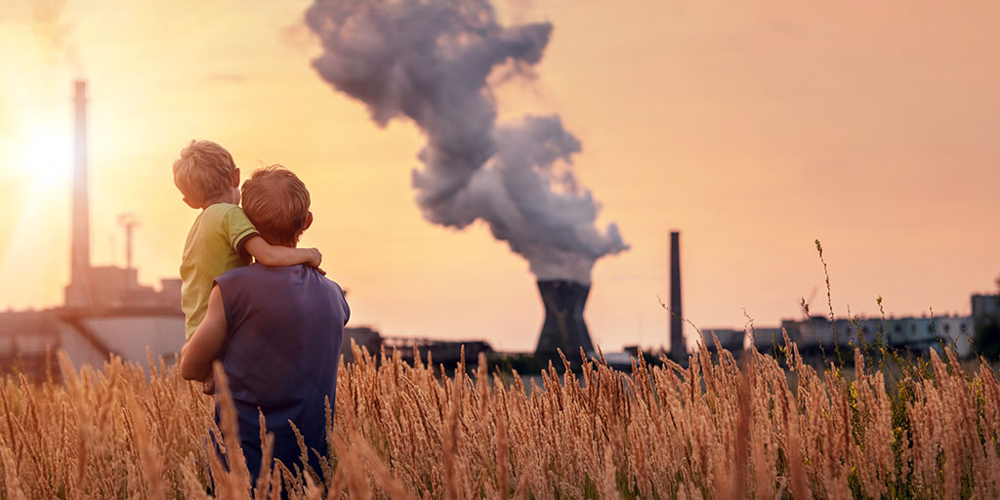

It has been suggested that beautiful and usable websites are created on a foundation of beautiful and usable typography. That makes it a pretty important element that you will want to look at very carefully.
Air pollution occurs when harmful or excessive quantities of substances including gases, particles, and biological molecules are intoduced into Earth's atmosphere. It may cause diseases, allergles and even death to humans; it may also cause harm to other living organisms such as animals and food crops, and may damage the natural or built environment. Both human activity and natural processes can generate air pollution.
Indoor air pollution and poor urban air quality are listed as two of the world's worst toxic pollution problems in the 2008 Blacksmith institute World's Worst Polluted Places report. According to the 2014 World Health Organization report, air pollution in 2010 caused the deaths of around 7 million people worldwide, an estimate roughly echoed by one from the International Energy Agency.
Air pollution is a significant risk factor for a number of pollution-related diseases, including respiratory infections, heart disesse, COPD, stroke and lung cancer, Growing evidence suggests that air pollution exposure may be associated with reduced IQ scores, impaired cognition, increased risk for psychiatric disorders such as depression and detrimental perinatal health. The human health effects of poor air quality are far reaching, but principally affect the body's respiratory system and the cardiovascular system. Individual reactions to air pollutants depend on the type of pollutant a person is exposed to , the degree of exposure, and the individual's health status and genetics. Outdoor air pollution alone causes 2.1 to 4.21 million deaths annually, makeing it one of the top contributors to human death. Overall, air pollution causes the deaths of around 7 million people worldwide each year, and is the world's largest single environmental health risk. Indoor air pollution and poor urban air quality are listed as two of the world's worst toxic pollution problems in the 2008 Blacksmith Institute World's Worst Polluted Places report. The scope of the air pollution cirsis is enormous: 90% of the world's population breathes dirty air to some degree. Although the health consequences are extensive, the way the problem is handled is often haphazard.